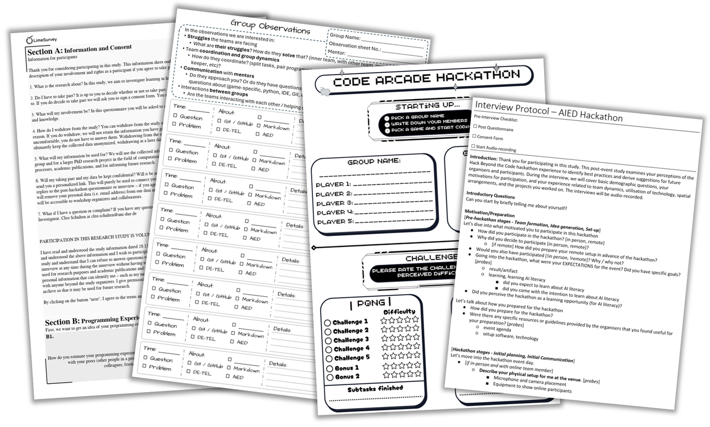
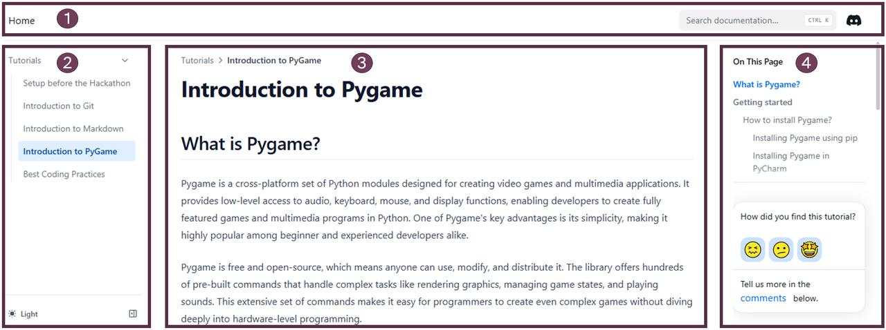
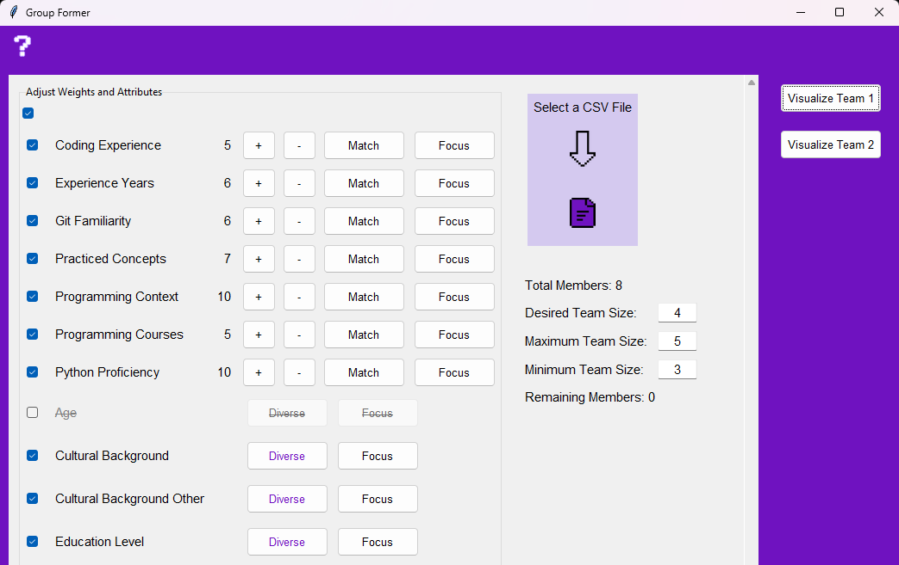
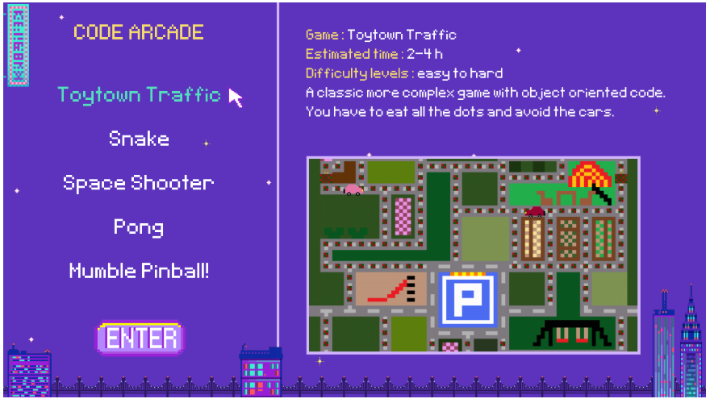

Resources
As part of the research that led to the development of the HackEDX framework 4 hackathons were organized by me and various collaborators. In preparing and evaluating these hackathons, we created several resources, that I want to present here.
Methods

The methods used to collect data in each of the four hackathons are collected in this online repository .
- Dissertation to be added
Participant Toolbox

After the first hackathon we designed a Toolbox for hackathon participants to prepare for the hackathon. The repository can be found here . More information about the toolbox can be found in the following publications:
- Schulten, C., Moharam, O., & Chounta, I.-A. (2025). What Do We Need for This? Organized Participant Preparation Before a Hackathon. Mensch Und Computer 2025-Workshopband, 10–18420. https://dl.gi.de/items/65ef3d62-be6b-4e7a-8429-4d97f01ba6c5
- Dissertation to be added
Group Former

For the fourth hackathon we used an automated group formation tool that used the participants' pre-questionnaire responses to create and propose teams. The repository can be found here . More information about the group formation can be found in the following publications:
- Schulten, C., Nolte, A., & Chounta, I.-A. (2025). HackEDX: Towards a Methodological Framework for Hackathons as Educational Experiences. [Publication pending]
- Dissertation to be added
Arcade Machine

For both the first and fourth hackathon we prepared (and then improved) an unfinished virtual Arcade Machine that includes 5 games with missing functionalities that the participants could complete by working on challenges. The repository can be found here . More information about the group formation can be found in the following publications:
- Schulten, C., Nolte, A., & Chounta, I.-A. (2025). HackEDX: Towards a Methodological Framework for Hackathons as Educational Experiences. [Publication pending]
- Dissertation to be added